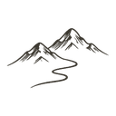
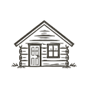
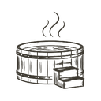
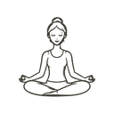
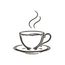
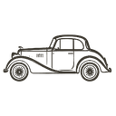
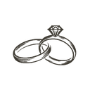
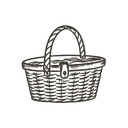
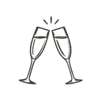
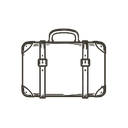

Yoga før frokost på lørdag, og drikken forklart med dine ord i «Godt å vite» under lørdag: ikke åpen bar, men drikke til maten og litt ekstra, og cider fra Hardanger til lunsjen. Klokkeslettene og prisene er plassholdere.
Alle tekstene er plassholdere, så se på formen, ikke ordene. De stiplede strekene viser hvor hver skjerm slutter på en vanlig mobil.
Alt i programmet er frivillig. Bli med på det dere har lyst til.
26. mai

10:00Fjelltur
15:00Hyttene er klare
21:00Badstue, stamp og mingling27. mai · bryllupsdagen

08:00Yoga
09:00Frokost
13:30Vi drar til kirka
14:00Vielsen
16:00Lunsj utenfor kirka
19:00Middag og fest28. mai

12:00Hyttene skal være tommeIkonene er dine egne (egne-bilder/14-Icons.jpg), klippet ut og farget i samme mørke farge som teksten. De er pynt, så skjermlesere hopper over dem; klokkeslettet og navnet sier hva som skjer.
Det som koster penger står fortsatt i ord («betales selv» og prisen), og alle ser alle hendelsene, også fjellturen (PRD FR-9).